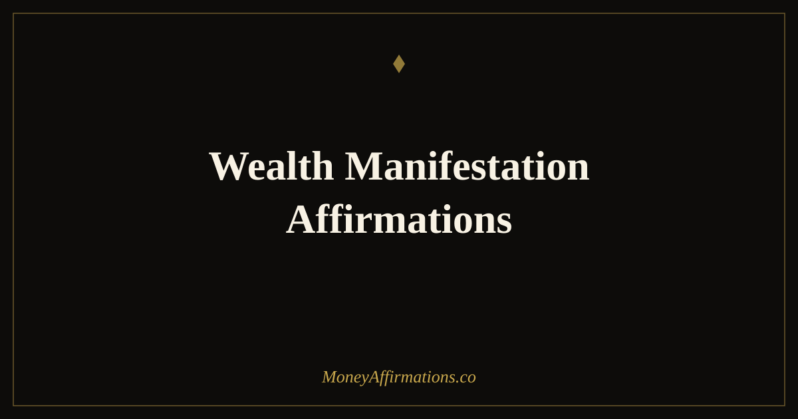

Wealth Manifestation Affirmations: 30 Statements to Attract Wealth

Manifesting wealth is not about wishing for money and waiting. It is about aligning what you believe, what you expect, and what you do until they all point in the same direction. Most people have the action part — the work, the plan, the ambition. What disrupts the outcome is the belief layer running underneath, quietly insisting that the goal is for someone else, that it will not work, or that something will go wrong just before things get good.
Wealth manifestation affirmations address that belief layer directly. These 30 statements are designed to close the gap between the wealth you are working toward and the identity that needs to match it. They work best when used consistently, with real feeling rather than mechanical repetition, and paired with the specific financial actions you are already taking. Belief and behaviour, running together, produce results that neither achieves alone.
What are wealth manifestation affirmations?
Wealth manifestation affirmations are present-tense statements that combine identity (who you are in relation to money) with intention (what you are in the process of creating). They differ from general wealth affirmations in that they carry a directional quality — they are not only about your current state but about active alignment with a financial future you are building.
Used well, they function as a form of mental rehearsal. The brain does not distinguish sharply between vividly imagined experience and real experience — a principle well-documented in sports psychology and now applied increasingly in financial behaviour research. Repeating "I attract wealth through my focused effort and open mind" primes the brain to notice confirming evidence, filter for relevant opportunities, and reduce the hesitation that blocks aligned action. For the full philosophy behind this practice, the manifestation affirmations collection provides a broader foundation.
30 wealth manifestation affirmations
- I am in the active process of manifesting a wealthy, secure, and expansive life.
- Wealth flows toward me as I align my beliefs, actions, and attention.
- I am a powerful attractor of financial opportunity and genuine abundance.
- My mind is clear, focused, and fully aligned with the wealth I am creating.
- I take consistent action and trust that prosperity is the natural result.
- The wealth I seek is already moving toward me through aligned effort.
- I am ready to receive financial abundance on a scale I have not yet experienced.
- My beliefs about money support my ability to create significant wealth.
- Every aligned choice I make brings me measurably closer to financial freedom.
- I see clearly what is possible and I act boldly on that vision.
- My energy, time, and attention are invested in building lasting wealth.
- I manifest wealth through clarity of purpose and consistency of action.
- The financial goals I hold in my mind are already taking shape in my life.
- I am worthy of the wealth I am manifesting and I welcome it fully.
- My income grows as my confidence in my own value and vision expands.
- I attract the right people, resources, and opportunities to build my wealth.
- I trust the process of wealth-building and I stay committed through every stage.
- Significant wealth is not only possible for me — it is already on its way.
- I hold my financial goals with clarity and release them with confidence.
- My daily habits and decisions are perfectly aligned with the wealth I am creating.
- I am open to wealth arriving through channels I have not yet imagined.
- The more I believe in my own potential, the faster my finances reflect it.
- I am both the architect and the beneficiary of my growing financial life.
- Wealth responds to my focused intention and my willingness to act.
- I deserve financial success and I allow myself to receive it without hesitation.
- My mindset is one of a person who creates, attracts, and sustains real wealth.
- I release all resistance to abundance and welcome prosperity in every form.
- I am patient with the process and certain of the outcome.
- My financial manifestations are supported by real skill, real effort, and real belief.
- I live, think, and decide like the wealthy person I am already becoming.
How to use these affirmations
Wealth manifestation affirmations work best when paired with a clear financial intention. Before your session, write down one specific wealth goal — an income figure, a savings milestone, a business target. Then read through the affirmations slowly, choosing five that feel most relevant to that goal. The specificity creates a bridge between the statement and your actual life, which is what separates useful practice from empty repetition.
Use them twice daily if possible: once in the morning to set your financial orientation for the day, and once in the evening to close the gap between the day's reality and your larger goal. In the evening, add one sentence: "Today I moved toward this goal by..." and name one thing, however small. This completion ritual matters because it trains the brain to register progress rather than only registering distance. Progress, even incremental, sustains the belief that drives the next action. Pair this practice with the broader manifesting affirmations for money collection for additional depth.
Why belief and action must move together to manifest wealth
One of the most persistent misunderstandings about manifestation is that belief alone produces results. The more accurate picture, supported by behavioural psychology, is that belief changes what you notice and how you act, and those changes produce results. The Pygmalion effect — first documented in educational settings and now well-studied in performance contexts — demonstrates that expectation shapes outcome not through magic but through subtle, consistent changes in behaviour. When you believe something is possible, you try differently, persist longer, take better risks, and interpret setbacks as information rather than proof of failure.
Wealth manifestation affirmations leverage this mechanism. When you consistently affirm "I attract wealth through my focused effort and open mind," your brain begins to filter for evidence of that being true. It notices the client who responds, the opportunity that fits, the insight that solves the problem. Simultaneously, reduced fear means you act on more of what you notice. The action produces results, which confirms the belief, which reduces resistance further. This is not a mystical cycle — it is how human motivation and attention actually work. The affirmation is the starting point, not the ending point.
Tips to make them work faster
- Attach a specific goal. Before each session, name the wealth target you are working toward. Vague affirmations produce vague results; connected ones produce aligned action.
- Use emotion, not just words. Say each affirmation with a genuine sense of possibility — even small. Emotional engagement activates the brain's motivational systems far more than neutral recitation.
- Act within thirty minutes. After your affirmation session, take one action — however small — that is consistent with the belief you just affirmed. Behaviour cements belief faster than repetition alone.
- Track weekly evidence. Each Friday, write three things that moved in the direction of your wealth goal. Evidence-tracking builds the compounding conviction that keeps you going.
- Rotate statements monthly. When an affirmation starts to feel completely neutral, the belief has been absorbed. Move to a bolder statement that creates a slight stretch.
Frequently Asked Questions
What is the difference between wealth affirmations and wealth manifestation affirmations?
Wealth affirmations focus on your current identity and relationship with money — who you are in relation to wealth. Wealth manifestation affirmations add the dimension of intention and movement — they are specifically about drawing wealth toward you through aligned belief and action. Both are useful, but manifestation affirmations tend to work best when you already have a specific goal in mind and want to align your mindset with the process of achieving it.
Do I need to visualise while using wealth manifestation affirmations?
Visualisation amplifies the effect but is not required. The most important element is emotional engagement — saying the affirmation with genuine feeling, even a small sense of possibility, activates the brain's reward and motivation systems more than words alone. If visualisation helps you access that feeling, use it. If it feels forced, focus on the emotional state instead: calm confidence, open expectancy, or quiet certainty that your financial goal is within reach.
Why do wealth manifestation affirmations stop working after a while?
They often stop producing a noticeable shift because the belief has either been fully absorbed (which is progress — move to bolder statements) or because repetition without emotion has made them feel mechanical. Rotate your affirmations regularly, always choosing ones that create a slight stretch. Pair each session with a concrete action, because when affirmations are connected to real behaviour, they continue producing results — the behaviour itself becomes the evidence that sustains the belief.
For a deeper library of statements aligned with the full practice of manifestation, explore the manifestation affirmations collection and build a daily ritual that connects your mindset directly to your financial goals.